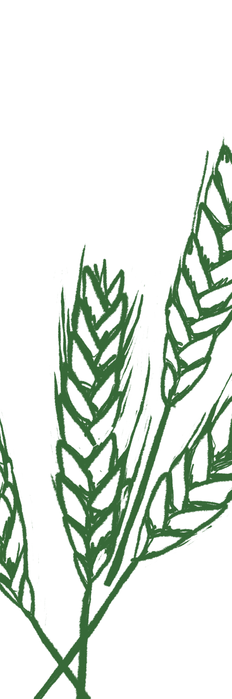

Notre histoire
Estavayer-Le-Lac
Sylvain, ingénieur de formation originaire d'Estavayer-Le-Lac, qui aime découvrir le monde, a une passion : la brassage de la bière.

Belgique
Poussé par cette passion, il suit différents cours et stages de spécialisation en Belgique, un pays d'où proviennent quelques-unes des meilleures bières.
Canada
C'est lors d'une de ses découvertes au Canada que l'entrepreneur né a décidé de se lancer dans la production de bière. Le concept de bière locale y est une véritable institution et l'intrigue beaucoup. C'est ce concept qu'il souhaite apporter et établir à Fribourg. « Licorne » est né.
La brasserie
Dans une belle bâtisse médiévale, trois employés et Sylvain y créent leur bière « licorne » rafraîchissante et gouleyante, comme nous la connaissons et l'aimons. Vous y trouverez également: